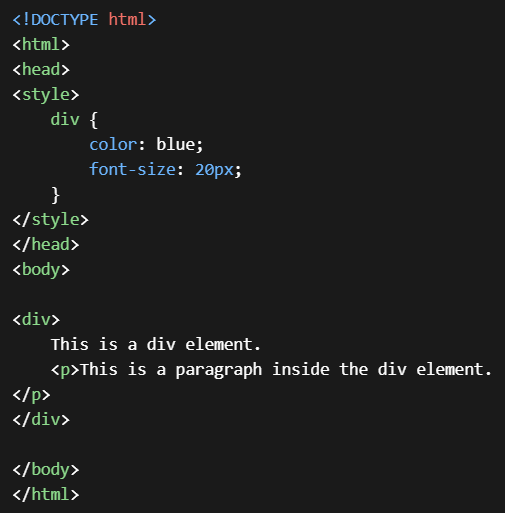

Explain Forms of HTML.
HTML forms are fundamental components of web development, facilitating the collection of user input. Here's a comprehensive explanation of common form elements:
<input> element with the "type" attribute set to "text". Additional attributes such as "name", "placeholder", "size", and "maxlength" can be utilized to specify the input field's characteristics.
<input> element with the "type" attribute set to "password".
<textarea> element and can include attributes such as "name", "rows", and "cols" to define the textarea's dimensions and behavior.
<input> element with the "type" attribute set to "radio" and share the same "name" attribute to form a group. Each radio button within the group should have a unique "value" attribute.
<input> element with the "type" attribute set to "checkbox". Each checkbox should have a unique "name" attribute, and the selected checkboxes' values are submitted with the form data.
<select> element and include nested <option> elements to specify the available choices. The selected option's value is submitted with the form data.
<input> element with the "type" attribute set to "submit" or by using a <button> element with the "type" attribute set to "submit". The text displayed on the button can be defined using the "value" attribute or the button's inner text.
Explain the Table tag in Html.
In HTML, the <table> tag is used to create tables, which are a way to organize and display data in rows and columns. Here's an explanation of how the <table> tag works and its associated elements:
<tr> tag, and each row contains one or more cells, which are defined using the <td> or <th> tags.
<tr> tag, you can include one or more table cells (<td> or <th>).
<td> tag represents one cell in a row and contains the actual content of that cell.
<td>, but it's typically used to represent header information for a row or column. By default, text in <th> elements is bold and centered.
<td> or <th> elements to span multiple rows or columns, respectively. Rowspan specifies the number of rows a cell should span, while colspan specifies the number of columns.
Here's an example of a simple table structure in HTML:
<table border="1">
<tr>
<th>Header 1</th>
<th>Header 2</th>
</tr>
<tr>
<td>Row 1, Cell 1</td>
<td>Row 1, Cell 2</td>
</tr>
<tr>
<td>Row 2, Cell 1</td>
<td>Row 2, Cell 2</td>
</tr>
</table>
In this example:
<table> tag creates the table.<tr>) are defined.<th> for headers in the first row and <td> for data cells in subsequent rows).What is list tag in html and what are the types of list tag in html
In HTML, the list tag is used to create lists, allowing you to organize and present information in a structured format. There are three main types of list tags in HTML:
Unordered List (<ul>): This tag is used to create a list of items without any specific order or sequence. Each item in the list is typically preceded by a bullet point by default.
Ordered List (<ol>): This tag is used to create a list of items in a specific numerical or alphabetical order. Each item in the list is typically numbered or lettered by default.
What is css and what are the ways to include css in html?
CSS (Cascading Style Sheets) is a stylesheet language used to describe the presentation of a document written in markup language like HTML. CSS enhances the look and feel of web pages by defining styles such as layout, colors, fonts, and spacing.
Ways to include CSS in HTML:
Inline CSS: You can apply CSS directly to HTML elements using the "style" attribute. This method is suitable for small, specific styles.Example:
<p style="color: blue; font-size: 16px;">This is a paragraph with inline CSS.</p>
What are selectors in html?
Selectors in HTML are patterns used in CSS to target specific HTML elements for styling. They allow developers to apply styles selectively to certain elements, making web design more efficient and flexible.
Here's a brief overview of the main types of selectors:
Element Selectors: These target HTML elements based on their tag names. For example, p targets all <p> elements, and h1 targets all <h1> elements.
Class Selectors: These target HTML elements based on their class attribute. Classes allow multiple elements to share the same styling. For example, .highlight targets all elements with the class "highlight".
ID Selectors: These target HTML elements based on their id attribute. IDs should be unique within a document. For example, #header targets the element with the id "header".
Attribute Selectors: These target HTML elements based on their attributes.
For example,
Descendant Selectors: These target HTML elements that are descendants of another element. For example, div p targets all <p> elements that are descendants of <div> elements.
Child Selectors: These target HTML elements that are direct children of another element. For example, ul > li targets all <li> elements that are direct children of <ul> elements.
Pseudo-classes and Pseudo-elements: These target HTML elements based on their state or position in the document. For example, a:hover targets <a> elements when they are being hovered over by the mouse.
Write a program in javascript to find the area of circle.
function calculateArea(radius) {
return Math.PI * Math.pow(radius, 2);
}
const radius = 5;
const area = calculateArea(radius);
console.log("The area of the circle with radius", radius, "is:", area);
Write a program in javascript to find the sum of two numbers and take input from the user.
let num1 = parseFloat(prompt("Enter the first number:"));
let num2 = parseFloat(prompt("Enter the second number:"));
if (!isNaN(num1) && !isNaN(num2)) {
console.log("The sum is:", num1 + num2);
} else {
console.log("Please enter valid numbers.");
}
What are the function in javascript with example
A function in JavaScript is a set of statements that perform a specific task. It takes inputs, and performs computation, and produces output. The idea is to put some commonly or repeatedly done tasks together and make a function so that instead of writing the same code again and again for different inputs, we can call that function.
function myFunction(a, b) {
return a + b;
}
// Calling the function
const result = myFunction(5, 2);
console.log(result);
Write a program in javascript to find the factorial.
function factorial(num) {
// Base case: factorial of 0 is 1
if (num === 0) {
return 1;
} else {
// Recursive case: multiply num by factorial of (num - 1)
return num * factorial(num - 1);
}
}
// Example usage:
const number = 5;
const result = factorial(number);
console.log("The factorial of", number, "is:", result);
Write difference between get and post method
| Aspect | GET Method | POST Method |
|---|---|---|
| Data Transfer | Sends data in the URL query string. Limited by the maximum length of the URL. | Sends data in the request body. Can handle larger amounts of data. |
| Visibility | Data is visible in the URL. Parameters are appended to the URL. | Data is not visible in the URL. Parameters are sent in the request body. |
| Caching | Responses can be cached by browsers and proxy servers. | Responses are not cached by default. |
| Security | Less secure for sensitive data. Parameters are visible in the URL. | More secure for sensitive data. Parameters are sent in the request body. |
| Idempotent | Idempotent operation. Repeated GET requests with the same parameters produce the same result. | Non-idempotent operation. Repeated POST requests may have different effects each time. |
What are the advantages of css and what is the use of css?
CSS (Cascading Style Sheets) offers several advantages and is widely used in web development for various purposes:
1. Separation of Concerns: CSS allows separation of content (HTML) from presentation (styling). This separation enhances maintainability and flexibility, as changes to styling can be made without altering the underlying content.
2. Consistency: CSS enables consistent styling across multiple web pages within a website or web application. By defining styles in a central CSS file, you ensure that all elements with the same class or tag are styled consistently.
3. Reusability: CSS allows you to define styles once and apply them to multiple elements throughout your website. This reusability reduces redundancy in code and makes it easier to maintain and update styles.
4. Flexibility and Control: CSS provides fine-grained control over the appearance of HTML elements. You can target specific elements or groups of elements and apply various styles such as colors, fonts, margins, padding, and positioning to achieve the desired layout and design.
5. Efficiency : By using CSS, you can write less code compared to inline styling or using HTML attributes like `style`. This leads to smaller file sizes, faster page load times, and improved performance.
6. Responsive Design : CSS enables the creation of responsive web designs that adapt to different screen sizes and devices. With features like media queries and flexible layout techniques, you can create websites that provide optimal viewing experiences on desktops, tablets, and smartphones.
7. Modularity: CSS allows you to organize styles into separate files or modules, making it easier to manage and maintain large codebases. Modular CSS frameworks and methodologies like BEM (Block, Element, Modifier) promote scalability and collaboration in web development projects.
What are the drawback of html?
1. Limited Styling: HTML primarily focuses on the structure and content of web pages, but it has limited capabilities for styling. While HTML includes basic tags for text formatting and layout, more advanced styling features require the use of CSS (Cascading Style Sheets).
2. Semantic Constraints: HTML has a predefined set of tags and attributes, which may not always perfectly represent the semantics of the content being created. For example, there might not be an appropriate tag for certain types of content, leading to less-than-ideal markup.
3. Browser Compatibility Issues: Different web browsers may interpret HTML code differently, leading to inconsistencies in rendering and functionality across different browsers and versions. Developers often need to write additional code or use browser-specific hacks to ensure cross-browser compatibility.
4. Accessibility Challenges: While HTML provides semantic tags for accessibility, ensuring that web content is fully accessible to users with disabilities can be challenging. Achieving compliance with accessibility standards such as WCAG (Web Content Accessibility Guidelines) requires careful markup and testing.
5. Limited Interactivity: HTML alone has limited capabilities for creating interactive web experiences. While HTML includes elements like forms and links, more complex interactivity and dynamic behavior require the use of JavaScript or other scripting languages.
6. Security Risks: HTML itself is not inherently insecure, but improper handling of user input or insecure coding practices can lead to security vulnerabilities such as cross-site scripting (XSS) attacks. Developers need to be vigilant about security best practices when writing HTML code.
7. SEO Limitations: While HTML provides semantic markup for structuring content, it may not always be sufficient for optimizing web pages for search engines. Additional SEO techniques such as meta tags, structured data markup, and content optimization are often necessary to improve search engine visibility.
How do you define grouping in css ?
In CSS, grouping allows you to apply the same set of styles to multiple selectors. Instead of repeating the same styles for each selector, you can group them together and apply the styles once. This helps keep your CSS code concise and easier to maintain.
Example:
selector1,
selector2,
selector3 {
property1: value1;
property2: value2;
/* Additional properties and values */
}
What are inline elements in css?
Inline elements in HTML are elements that do not start on a new line and only take up as much width as necessary. They flow along with the surrounding text content horizontally, allowing other elements to sit beside them on the same line.
Here are some examples of inline elements:
In how many ways, can you select html tags?
Element Selector: Selects elements based on their tag name.
Class Selector: Selects elements based on their class attribute.
ID Selector: Selects elements based on their id attribute.
Attribute Selector: Selects elements based on their attributes.
Universal Selector: Selects all elements in the document.
Describe the method of changing font using css.
To change the font of text using CSS, you can use the font-family property. This property allows you to specify one or more font families for an element, in order of preference. If the first font is not available, the browser will attempt to use the next font in the list. Here's how you can change the font using CSS:
/* Single Font Family */
.example {
font-family: Arial, sans-serif;
}
/* Multiple Font Families */
.example {
font-family: "Helvetica Neue", Helvetica, Arial, sans-serif;
}
Demonstrate with an example, how inner elements inherit style information from outer element in css.
Demonstrate with an example, how inner elements inherit style information from outer element in css.

In the above HTML document, a div element is styled with a color of blue and a font size of 20px. The p element, being a child of the div element, inherits these styles. As a result, the text within the p element will also be blue and have a font size of 20px.
However, it's important to note that not all CSS properties are inherited by default. Some properties, such as background-color, do not inherit. But you can use the inherit keyword to force a property to inherit its value from its parent element.
In addition, CSS provides other keywords like initial and unset to control inheritance. The initial keyword applies the initial (or default) value of a property, while the unset keyword acts like inherit for inherited properties and like initial for non-inherited properties.
Understanding inheritance in CSS is crucial as it helps in writing less code, maintaining consistency, and controlling styles effectively across a website. It's a fundamental concept in CSS that plays a significant role in how styles are applied and rendered in a webpage.